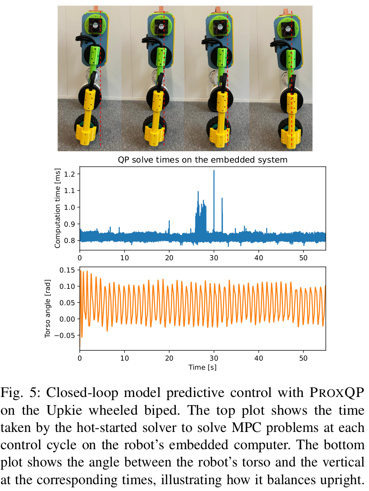

Convex Quadratic programming (QP) has become a core component in the modern engineering toolkit, particularly in robotics, where QP problems are legions, ranging from real-time whole-body controllers to planning and estimation algorithms. Many of those QPs need to be solved at high frequency. Meeting timing requirements requires taking advantage of as many structural properties as possible for the problem at hand. For instance, it is generally crucial to resort to warm-starting to exploit the resemblance of consecutive control iterations. While a large range of off-the-shelf QP solvers is available, only a few are suited to exploit problem structure and warm-starting capacities adequately. In this work, we propose the ProxQP algorithm, a new and efficient QP solver that exploits QP structures by leveraging primal-dual augmented Lagrangian techniques. For convex QPs, ProxQP features a global convergence guarantee to the closest feasible QP, an essential property for safe closed-loop control. We illustrate its practical performance on various standard robotic and control experiments, including a real-world closed-loop model predictive control application. While originally tailored for robotics applications, we show that ProxQP also performs at the level of state of the art on generic QP problems, making ProxQP suitable for use as an off-the-shelf solver for regular applications beyond robotics.
